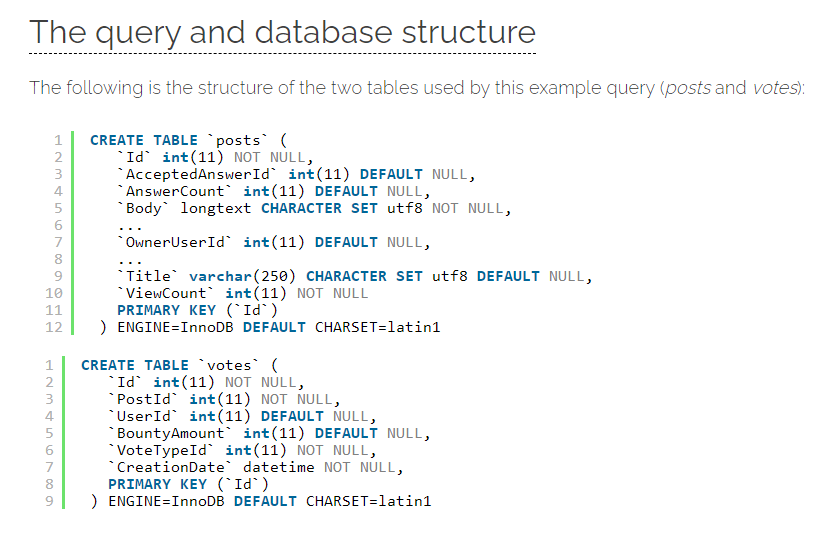
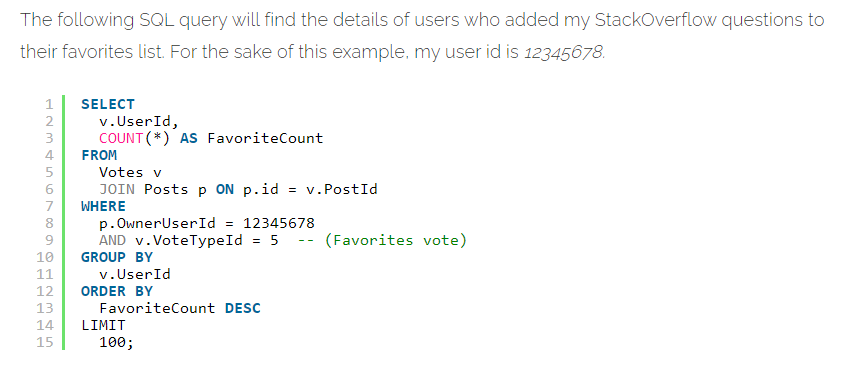
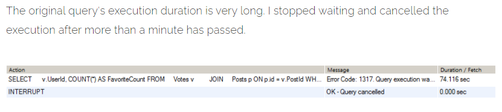
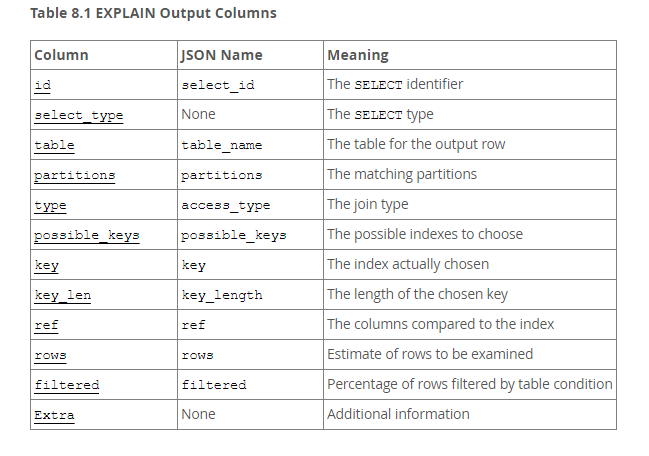
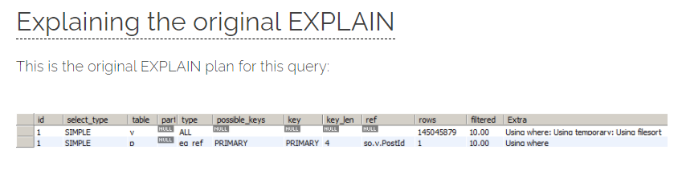

Assignments
PROSES QUERY
Sebenarnya, pembahasan “proses query” ini saya maksudkan agar kita semua tahu seluk
buluk dari evaluation plan itu sendiri, terdapat di tahapan proses query yang mana sih
evaluation plan ini? dan
guna dari evaluation plan ini apa sih?
Jadi, cara kerja dari sebuah query ialah melalui beberapa proses. Proses -proses
tersebut diantaranya :
1. Parsing — merupakan proses pertama, dimana ia memeriksa sintaks
query yang ditulis.
jadi jika terjadi kesalahan di sintaks, proses selanjutnya otomatis tidak akan dilakukan
dan mendapatkan peringatan dari DBMS
2. Translasi — selanjutnya, apabila query sudah benar secara sintaks,
maka query
tersebut akan ditranslasi menjadi aljabar relational. Hal ini musti dilakukan sebab
sintaks SQL adalah bahasa pemrograman tingkat tinggi sehingga perlu dirubah ke bahasa
yang dimengerti oleh mesin.
3. Optimasi — proses ini sangat panjang untuk dapat dijabarkan secara
luas. simplenya…
satu buah query yang sama bisa dibuat lebih dari satu aljabar relational yang berbeda.
Maka dari itu, DBMS akan memilih yang mana yang akan dieksekusi. Nah. satu ekspresi
aljabar relational yang terbentuk tersebut disebut dengan istilah evaluation plan (EP).
EP ini akan dihitung costnya. Cost ini diperoleh dari informasi statistik yang ada di
database catalog. Ada banyak parameter biaya yang diperhitungkan. Misalnya banyaknya
baris maupun blok di suatu relasi. Proses ini sangat penting jika jumlah baris query-nya
sudah memasuki angka jutaan.
4. Eksekusi — setelah evaluation plan, akan dilakukan eksekusi dan
pengambilan data yang
diperlukan dari database, nanti hasilnya pun akan ditampilkan di monitor
Sebagian besar sistem database menyediakan jalan untuk menampilkan evaluation plan yang
dipilih untuk menjalankan query tertentu. Biasanya paling bagus menggunakan GUI yang
disediakan dengan sistem database untuk menampilkan evaluation plan. Lagi pula, jika
kita menggunakan command line interface, beberapa database akan menerima berbagai
perintah “explain query”, dimana menampilkan eksekusi plan terpilih untuk query
tertentu. Adapun sintaks yang sebenarnya bervariasi, tergantung dari sistem database
yang digunakan.

Tampilan Evaluation Plan
1. MY SQL
MySQL menggunakan sintaks explain query yang sama seperti PostgreSQL. Tetapi, outputnya
adalah tabel yang isinya tidak mudah dipahami. Bagaimanapun, eksekusi show warning
setelah perintah explain tersebut menampilkan evaluation plan dengan format yang
lebih mudah dipahami dan dibaca.
2. PostgreSQL
menjelaskan query, yang ditampilkan rencana eksekusi yang dipilih untuk kueri yang
ditentukan query

Tampilan Evaluation Plan
3. SQL SERVER
SQL Server memerlukan perintah set show_plan text on untuk dieksekusi sebelum
mengirimkan query. Lalu, saat query telah terkirim, bukannya query dieksekusi,
evaluation plan yang ditampilkan.
4. ORACLE
Oracle system menggunakan sintaks explain plan for. Namun, perintah tersebut malah
menyimpan rencana yang dihasilkan ke dalam tabel yang disebut plan_table. Bukannya
menampilkan, query “select * from table(dbms_xplain.display);” menampilkan rencana yang
disimpan.
Contoh Menampilkan Evaluation Plan Pada MySQL
    
Penjelasan dari tabel di atas, Setiap baris di EXPLAIN berisi bidang berikut:
• id - Dalam kebanyakan kasus, bidang id akan menampilkan nomor urut SELECT query untuk
baris yang di miliki. Kueri di atas tidak berisi subkueri atau gabungan, jadi id untuk
kedua baris adalah 1, karena sebenarnya hanya ada 1 kueri.
• select_type - jenis SELECT query dalam kasus ini adalah simple query karena tidak
berisi subkueri atau gabungan. Dalam kasus yang lebih kompleks, ini akan berisi tipe
lain seperti SUBQUERY (untuk subkueri), UNION (pernyataan kedua atau yang lebih baru
dalam sebuah gabungan), DERIVED (tabel turunan) dan lainnya. Informasi lebih lanjut
tentang access_types dapat ditemukan di dokumen MySQL.
• table - nama tabel atau alias yang dirujuk baris ini. Pada gambar di atas, Anda dapat
melihat 'v' dan 'p' disebutkan, karena itu adalah alias yang ditentukan untuk tabel
suara dan posting.
• type - mendefinisikan bagaimana tabel diakses / digabungkan. Jenis akses paling
populer yang biasanya akan Anda lihat adalah yang berikut, diurutkan dari yang terburuk
hingga yang terbaik: ALL, index, range, ref, eq_ref, const, system. Seperti yang Anda
lihat di JELASKAN, suara tabel adalah tabel pertama yang diakses, menggunakan ALL
access_type, yang berarti MySQL akan memindai seluruh tabel, tanpa indeks, sehingga akan
melalui lebih dari 14 juta catatan. Tabel posting kemudian diakses menggunakan tipe
akses eq_ref. Selain tipe sistem dan konst, eq_ref adalah tipe gabungan terbaik.
Database akan mengakses satu baris dari tabel ini untuk setiap kombinasi baris dari
tabel sebelumnya.
• possible_keys - Indeks opsional yang dapat dipilih MySQL, untuk mencari baris dalam
tabel. Beberapa indeks dalam daftar ini sebenarnya tidak relevan, sebagai hasil dari
urutan eksekusi yang dipilih MySQL. Secara umum, MySQL dapat menggunakan indeks untuk
menggabungkan tabel. Dengan demikian, ia tidak akan menggunakan indeks pada kolom
gabungan tabel pertama, karena ia akan tetap melalui semua barisnya (kecuali baris yang
difilter oleh klausa WHERE).
• key - Kolom ini menunjukkan indeks sebenarnya yang memutuskan untuk digunakan MySQL.
Ini tidak berarti ia akan menggunakan seluruh indeks, karena ia dapat memilih untuk
menggunakan hanya sebagian dari indeks, dari sisi paling kiri.
• key_len - Ini adalah salah satu kolom penting dalam output penjelasan. Ini menunjukkan
panjang kunci yang memutuskan untuk digunakan MySQL, dalam byte. Dalam EXPLAIN output di
atas, MySQL menggunakan seluruh indeks PRIMARY (4 byte). Kita tahu itu karena
satu-satunya kolom di indeks PRIMARY adalah Id, yang didefinisikan sebagai INT => 4
byte. Sayangnya, tidak ada cara yang lebih mudah untuk mengetahui bagian mana dari
indeks yang digunakan oleh MySQL, selain menggabungkan panjang semua kolom dalam indeks
dan membandingkannya dengan nilai key_len.
• rows - Menunjukkan jumlah baris yang menurut MySQL harus diperiksa dari tabel ini,
untuk menjalankan kueri. Ini hanya perkiraan. Biasanya, jumlah baris yang tinggi berarti
ada ruang untuk pengoptimalan kueri.
• filtered - Jumlah baris yang tidak difilter oleh kondisi di klausa WHERE. Baris ini
akan digabungkan ke tabel di baris berikutnya dari rencana MENJELASKAN. Seperti yang
disebutkan sebelumnya, ini juga angka perkiraan, jadi MySQL bisa salah dengan perkiraan
ini.
• extra - Berisi lebih banyak informasi tentang pemrosesan kueri. Mari kita lihat ekstra
untuk kueri kita:
1. using where - Klausa WHERE digunakan untuk membatasi baris mana yang diambil dari
tabel saat ini (suara) dan dicocokkan dengan tabel berikutnya (posting).
2. using temporary - Sebagai bagian dari pemrosesan kueri, MySQL harus membuat tabel
sementara, yang dalam banyak kasus dapat mengakibatkan penalti kinerja. Dalam kebanyakan
kasus, ini akan menunjukkan bahwa salah satu klausa ORDER BY atau GROUP BY dijalankan
tanpa menggunakan indeks. Ini juga bisa terjadi jika klausa GROUP BY dan ORDER BY
menyertakan kolom berbeda (atau dalam urutan berbeda).
3. using filesort - MySQL dipaksa untuk melakukan penerusan lain pada hasil kueri untuk
mengurutkannya. Dalam banyak kasus, ini juga dapat mengakibatkan penalti kinerja.